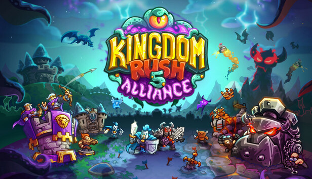
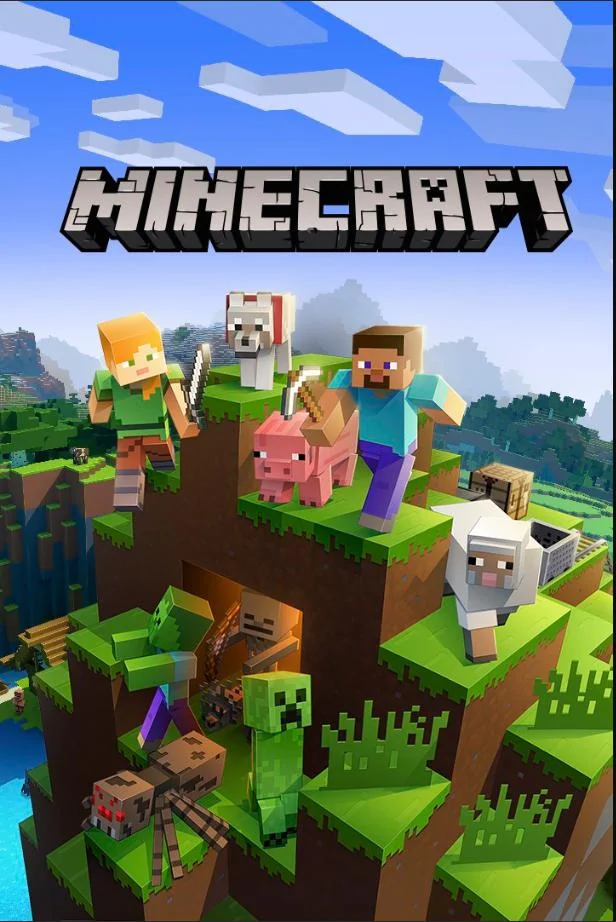
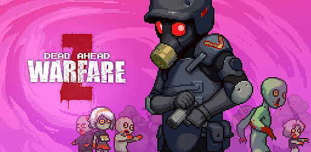

Esses são alguns dos meus jogos favoritos!

Dying Light
Um jogo de parkour e sobrevivencia contra zumbis.
Um jogo de combate com parkour zumbis diversos que até são mais perigosos a noite.
Eu gosto muito desse jogo por ser bom e difícil.
Foi criado em (26/01/2015)

Kingdom Rush 5
Um jogo de estratégia de torres defensivas eu um mundo diverso.
Jogo de estrategia com fantacia com magia, espadadas, flechas, bombas e muito mais.
Eu gosto desse jogo por ser desafiador e estratégico.
Foi criado em (25/07/2024)

Far Cry 5
Um jogo de combate contra uma religião no Estados Unidos.
Jogo de exploração e guerra de facções em uma cidade no interior, onde você faz de tudo e mais um pouco.
Eu gosto desse jogo por ter uma boa história.
Foi criado em (27/03/2018)

Forts
Um jogo de batalha de fortes estratégico com construção.
Jogo de guerra de fortes com armas de destruição em massa, jogando sozinho ou com amigos.
Eu gosto desse jogo por ser frenético e tenso.
Foi criado em (19/04/2017)

Minecraft
simulador de combate com exploraçãoo e construção.
explore o mundo contrua base ou casas, seprepare para a noite pós vai tem criaturas.
Eu gosto desse jogo por pode usar minha criatividade.
Foi criado em (17/05/2009)

Dead Ahead Zombie Warfare
Um jogo de ataque e defesa contra zumbis e alienígenas.
Pegue seu ônibus e destrua os zumbis e as barricadas com a sua equipe.
Eu gosto desse jogo por ser quase inpossível sobreviver.
Foi criado em (08/03/2017)